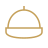
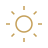
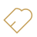

SAFETY & EDUCATION
徹底した安全管理と教育で、無事故・無災害を追求します。
NEXELでは「安全はすべてに優先する」を合言葉に、作業員一人ひとりの意識向上と現場環境の整備を徹底。
無事故・無災害の現場を目指し、お客様の大切な資産を安全かつ確実に解体いたします。
「安全はすべてに優先する」を全員で共有し、行動に落とし込みます。
新規入場者教育・職長教育・KY活動を定期的に実施し、意識を高めます。
作業手順・危険箇所・使用重機を事前に確認し、リスクを最小限に。

ヘルメット・安全帯・防塵マスクなど必要な保護具の着用を徹底します。

現場パトロール・監視体制を強化し、不安全行動や危険を早期発見します。

全協力会社と安全基準を共有し、一体となって安全を追求します。
毎日の作業前にKYミーティングを行い、危険箇所や注意点を全員で共有します。
高所作業時は足場の点検・安全帯の使用を徹底し、墜落災害を防ぎます。
養生・立入禁止・誘導員の配置により、近隣や通行人への影響を防ぎます。
重機の点検・作業範囲の明確化を行い、接触・挟まれ災害を防止します。
散水・防音シートの設置など、環境への配慮を徹底します。
資材の整理・通路の確保を徹底し、つまずきや転倒災害を防ぎます。
全員が「自分の身は自分で守る」という意識を持ち、仲間の安全も守ります。
決められたルールを確実に守り、より良い安全ルールを現場から生み出します。
小さな気づきや改善を積み重ね、無事故・無災害の記録を更新し続けます。